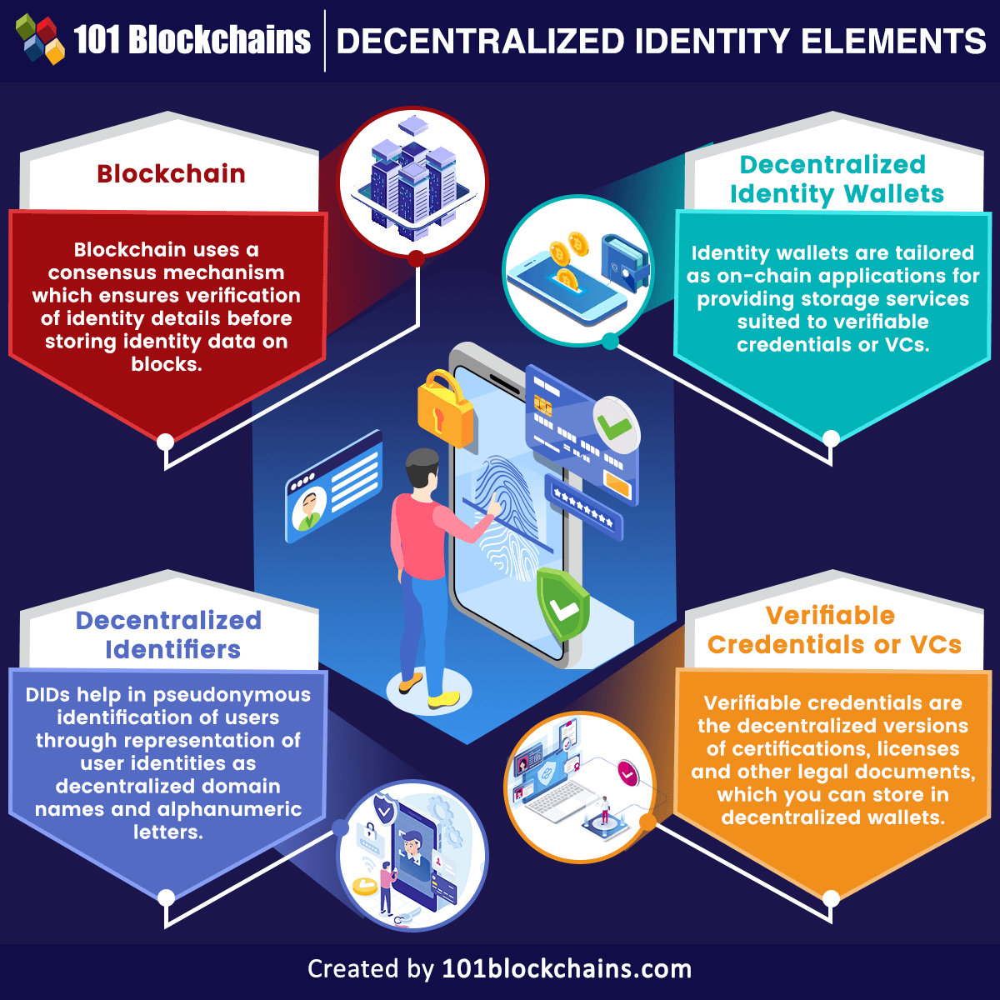

Projetos Profissionais
- 1.Sistema de Auditoria Ética e Governança de Algoritmos (IA)Um software que analisa códigos de Inteligência Artificial para detectar vieses sociais, preconceitos algorítmicos e brechas de segurança de dados.
- 2. Protocolo de Identidade Digital Descentralizada e Criptografia Pós-QuânticaUma plataforma de identidade autossoberana em blockchain, permitindo que cidadãos controlem seus dados pessoais sem depender de governos ou Big Techs.

Voltar ao Portifólio